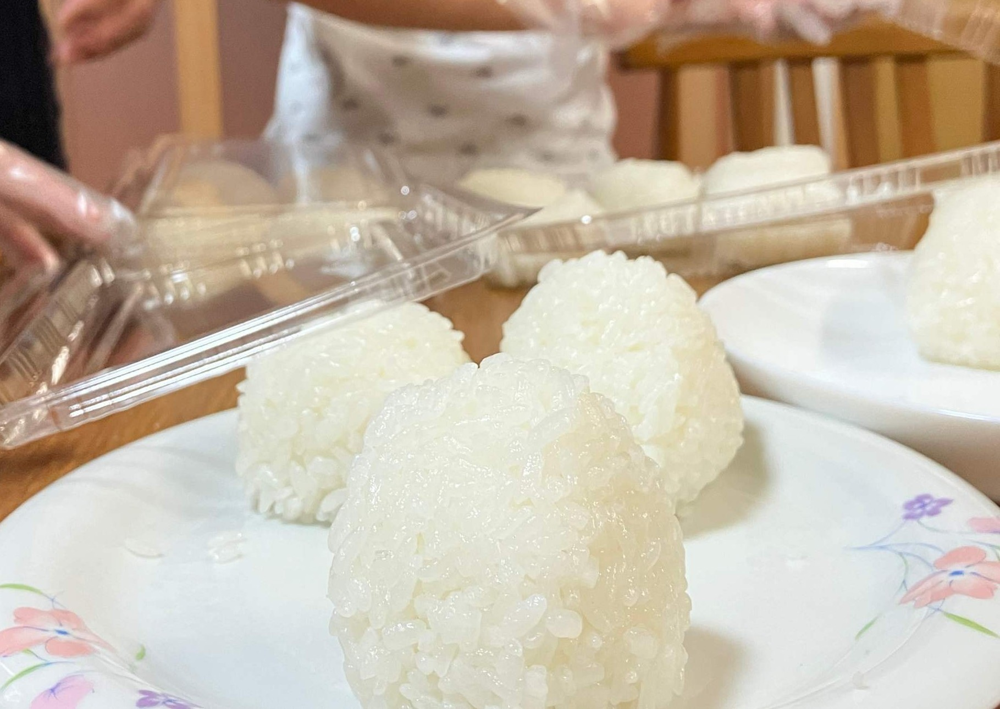

酒米の聖地が、
本気でつくったお米。
本気でつくったお米。
先人の知恵と最新の技術、最善を毎年更新する米づくり。

先人の知恵と最新の技術、最善を毎年更新する米づくり。



数千万年の歳月が育んだ肥沃な粘土質の土壌と地形。酒米の最高峰・山田錦の特A地区として認められてきた、この土地だけの力です。
日本酒の最高峰を醸すために追求してきたのは、米の雑味を極限まで削ぎ落とす栽培。その技術を、食用米づくりにすべて注ぎ込みました。
最新のスマート農業やデータによる品質管理で、環境変化にも適応し、最善をアップデートしています。

最高の日本酒を醸すために、酒米農家が追い求めてきたもの。それは「米の雑味を極限まで削ぎ落とす技術」でした。背が高く倒れやすい山田錦は、刈り取りの見極めも、肥料のさじ加減もきわめて繊細。肥料が多すぎれば、それだけで雑味の原因になります。90年にわたって受け継がれてきた経験と知恵を、現代の科学で紐解き、水一滴の管理にまで魂を込める。その技術のすべてを注ぎ込んで育てたのが、とうじょう米です。



とうじょう米は、オンラインストア（STORES）にて販売しております。精米したてのお米を、産地から直接お届けします。
STORESを見る